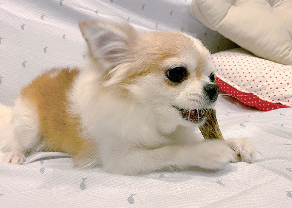
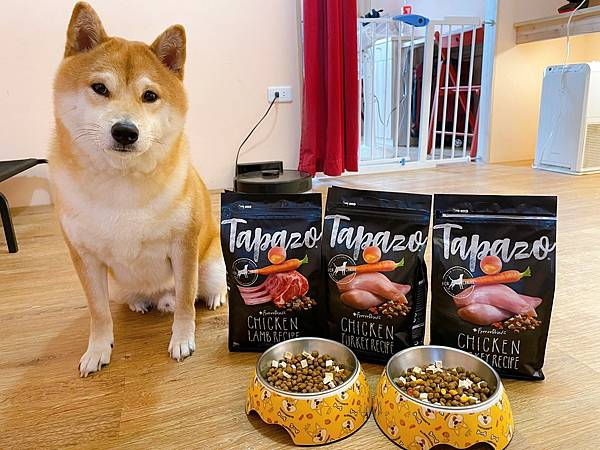
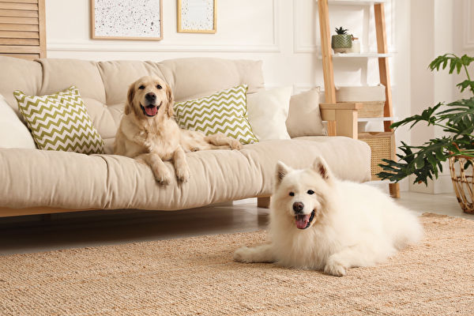
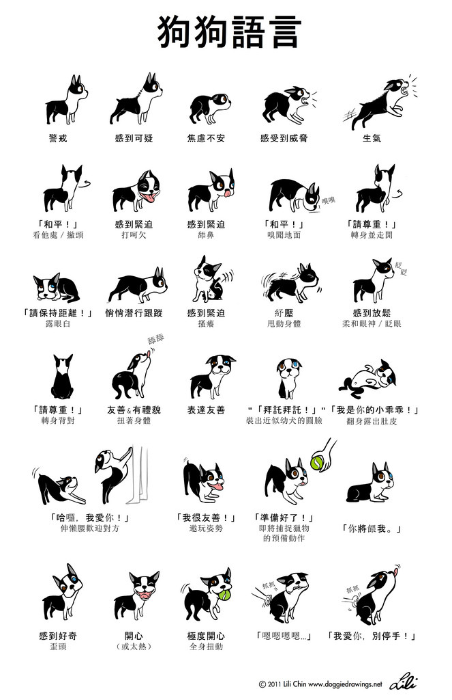

養狗須知

(以上圖片出自：https://www.epochtimes.com/b5/20/9/9/n12390935.htm)
狗的叫聲
犬，現代俗稱為狗，一種常見的犬科哺乳動物，與狼為同一種動物，生物學分類上是狼的一個亞種。
狗是人類最早馴養的一個物種。有人飼養的稱為家犬，無人飼養的狗稱常被稱為「野狗」或「流浪狗」，
可能對環境與其他生物造成影響，是世界百大外來入侵種之一。狗的壽命最多可超過二十年，平均則為十數年，
與貓的平均壽命相近。若無發生意外，平均壽命以小型犬為長。
養狗該準備什麼？基本花費大概多少錢？
相信這是很多人在養狗前最想了解的問題，畢竟狗狗一養就是一輩子，當然要在真的開始養之前，
好好評估自己到底適不適合養狗了！這次我們特別針對新手狗飼主做了一系列養狗新手指南，
像是養狗前需要評估的事項、養狗的花費等，趕快了解一下吧！
養狗需要準備哪些東西？

- 食物 & 水
雖然有些人會讓狗狗吃人類的食物，但那些調味過的食物對狗狗來說都太重口味了，長期食用對狗狗的健康負擔並不小，因此建議挑選狗狗專用的飼料，無論是乾糧或濕食，挑選成分優質且狗狗愛吃的飼料，對狗狗而言才是最好的選擇。
- 食器
有了食物，當然還需要盛裝食物的器皿，除了飯碗以外，也可以準備一台寵物專用飲水機，不斷流動的活水能夠大大增加狗狗喝水的頻率！
- 便盆 & 尿布墊
除了帶狗狗外出大小便以外，在家也要準備狗狗專屬的便盆和尿布墊，才能讓狗狗習慣在固定地點上廁所、不會隨便在家中便溺。
- 外出用品
對狗狗來說，外出是非常必要的一件事，不論是外出大小便或運動一下，都能讓狗狗過得更開心、健康，因此專用的外出用品也必不可少，像是遛狗使用的牽繩、背帶，或者外出包、提籠等，都是養狗的必備物品。
- 床窩
針對狗狗的體型挑一張尺寸適中的床窩，讓狗狗可以有個地方休息、且更有安全感。
- 指甲剪
狗狗的指甲需要定期修剪，否則過長的指甲可能會影響狗狗行走、增加關節負擔，因此準備一隻指甲剪，定期修剪狗狗的指甲也是必做功課！
- 毛梳
挑選專為狗狗設計的專用毛梳，定期幫狗狗清掉身上多餘的廢毛，不但可以大幅降低狗狗皮膚出問題的機率，也可以避免家中滿地狗毛的情況發生。
- 洗毛精
幫狗狗定期洗澡也是很必要的一件事！挑選成分天然的專用洗毛精，除了洗掉狗狗身上的髒污和多餘皮膚分泌物，最大的幫助就是洗掉狗狗身上的體味了！如果無法自己幫狗狗洗澡，也要記得定期帶去專業寵物美容。
- 潔牙用品
狗狗和人一樣需要刷牙，因此需要準備牙刷、潔牙骨等物品來讓狗狗的牙齒保持乾淨健康，由於牙齒的健康問題通常是不可逆的，及早開始定期幫狗狗去除牙垢，可以讓狗狗避免牙結石、保持健康！
養狗需要多少花費？

最基本的花費就是飼料了，通常狗狗的食量可用體重來計算，
公斤 x 0.2 = 每月所需的飼料量，舉例來說，一隻 8 公斤的狗狗，
每個月所需要的飼料就是 8 x 0.2 = 1.6 公斤，大約每公斤 300 元就能買到品質不錯的平價飼料，
因此每個月狗狗的伙食費就大概是 1.6 x 300 = 480 元。
除了飼料以外，還要加上營養補充品、零食、玩具、和尿布墊等各類狗狗用品，
所以正常情況而言，一個月的養狗開銷大約在 1500～2000 元左右。
養狗前必須評估的事情
- 自身經濟能力
一旦決定養狗，必然會增加許多額外開銷，除了飼料、尿布等每月固定開銷外，偶爾也會購買床窩、狗狗玩具等寵物用品，狗狗也可能生病需要看獸醫，且動物沒有健保、每一次看診治療的費用都不便宜，因此衡量一下自身經濟狀況能否負擔，是養狗前最需要思考的事情！
- 家中空間大小
如果是養貓，即便家中空間不大，仍可透過裝設貓跳台的方式讓貓貓有足夠的活動空間，但狗狗就不同了，狗狗不適合太多的垂直跳上跳下，需要平面空間夠大才能有足夠的活動範圍，若室內空間不到 30 坪，對狗狗來說是比較難活動的空間大小。
- 家人 / 鄰居是否能接受
若與家人同住，需要好好確認家人能否接受養狗，不少新手飼主因缺乏溝通而引發家庭革命，這樣的情況不論對狗狗或對家人來說都很不好、也是養狗最大的禁忌！畢竟狗狗帶回家就是一輩子的事，好好跟家人溝通是必要的尊重；除了家人以外，鄰居也是重要的考量點，狗狗難免偶爾會叫個一兩聲、或在玩耍時發出聲音，若鄰居是一點點聲音都無法接受的，那也要好好評估在這裡養狗的可行性。
- 是否有空陪狗狗
狗狗需要非常多的陪伴，不論是帶他出門或跟他待在家，都會用掉你不少時間，因此需要評估自己是否真的能撥出時間陪狗狗，若平常已經忙到沒時間休息，那麼在養狗前真的需要冷靜三思。
- 教狗需要很多耐心
很多溫馴乖巧的狗狗都是耐心教出來的，你需要透過正確的方式一步一步引導狗狗學習，讓他了解什麼該做、什麼不該做，而在他學會以前，你可能需要幫他收拾殘局（清理大小便、更換新傢俱等），這需要很多的耐心，不論是自己教或是帶狗狗去上課，這些也是養狗前需要了解的事。
- 是否常常不在家
狗狗需要照顧、需要陪伴，如果在家時間不長、甚至常常出遠門的話，那可能就比較不適合養狗狗了！
養狗的好處 & 壞處
- 生活中多一個伴
- 養成你固定外出活動的習慣
- 療癒身心、釋放壓力
- 結交擁有共通話題的狗飼主朋友
- 需要撥時間外出遛狗
- 增加固定開銷（尤其是帶狗狗看醫生）
- 出遠門較不方便
- 家中環境大改變的風險
養狗的居家環境需注意什麼？

- 空間夠大：
狗狗需要足夠的空間活動，寬敞（30 坪以上）且無太多障礙物的室內空間較適合。
- 保護易碎物品：
狗狗可能因太興奮而撞倒家中擺設，因此家中易碎或昂貴的物品要記得收好。
- 保持乾淨：
家中若髒污、灰塵太多，可能讓狗狗因皮膚接觸或舔舐而影響健康，所以需要保持環境乾淨，清潔時也需要使用安全無毒的清潔劑，以免狗狗誤食而生病。
- 固定如廁的地點：
需要在固定地點擺設尿布墊和便盆，讓狗狗習慣在固定地點大小便，才不會讓家中環境一團糟。
狗狗的情緒
- 狗耳朵
能表現情感。當耳朵充滿力氣向後貼時，表示它想攻擊對方。而當耳朵向後貼卻很柔軟時，表示高興或是在撒嬌。
- 狗表情
睛射凶光、齜牙咧嘴、發出喉音、毛髮豎立。尾巴直伸，與它發怒的物件保持著一定距離。如果它前身下伏，後身隆起，做撲伏狀，那就是要發起進攻了。
- 狗尾巴
最能正確表達它的感情，尾馬搖動，表示喜悅；尾巴垂下，意味危險；尾巴不動，顯示不安；尾巴夾起，說明害怕。
- 狗眼睛
能看出心情變化。生氣時瞳孔張開，眼睛上吊，變成可怕的眼神。悲傷和寂寞時，眼睛濕潤。高興的時候，目光晶亮。充滿自信或希望得到信任時，決不會將目光移開。受壓於人或者犯錯誤時，會輕移視線。不信任時，目光閃爍不定。

是否對養狗有更多的認識？
有更了解
還好
沒有幫助
還想了解什麼資訊？
參考資料
https://petbird.tw/article5161.html
https://zh.wikipedia.org/wiki/%E7%8A%AC
https://blog.pinkoi.com/tw/lifestyle/2206-keeping-dogs/
https://petbird.tw/article5344.html
https://pets.ettoday.net/news/1553741
https://www.flaticon.com/authors/surang
https://www.epochtimes.com/b5/21/12/2/n13412778.htm
https://pets.ettoday.net/news/16739
https://reurl.cc/LXaVg7
https://reurl.cc/VRY7ob